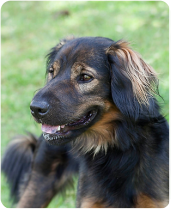
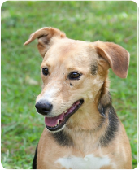
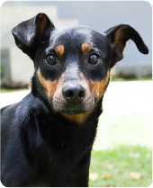

ADOTE
Agradecemos seu interesse em adotar um cão sem dono. Prepare-se para uma experiência gratificante que durará muitos anos.
APADRINHE
O apadrinhamento de um cão é uma forma de conseguirmos recursos fixos para ajudar na tarefa diária de cuidar de nossos animais, além de ter mais tranquilidade e poder planejar melhor nossas ações.
DOAÇÕES
Existem muitas formas de nos ajudar a cuidar dos mais de 450 cães que estão abrigados em nossos lares Transitórios, fora os cães que ajudamos a sustentar de outros protetores.
Garoto, o cão que esta mais de 10 anos esperando ser adotado.
Então, enquanto o milagre da adoção não acontece, que tal ajudar esse cãozinho, hoje já idoso, de uma outra forma?
Na sombra da solidão e do abandono, há uma história que clama por compaixão. Este é o caso de um cão chamado Garoto, que há mais de uma década espera por um lar em nosso abrigo de Itapecerica da Serra, SP. Ele é o nosso mais antigo abrigado.
Garoto foi resgatado em condições desumanas, onde mal tinha o suficiente para sobreviver. Seu corpo magro e olhos tristes contavam uma história de negligência e dor.Mas, graças aos esforços incansáveis de nossa equipe de resgate, ele acabou encontrando refúgio em nosso sítio/abrigo.
Nos primeiros dias, achamos que ele poderia ser adotado, pois era um cão novo, cheio de vida. No entanto, os dias se transformaram em semanas, as semanas em meses, e os meses em anos.
E assim, mais de 10 anos se passaram e o Garoto, hoje com 13 anos, continua ali, observando cada pessoa que passa por ele, na esperança de que alguém o leve para uma casa.
Às vezes, e temos certeza disso, Garoto se pergunta o que fez de errado. Por que ninguém o adotou até hoje? Nem nós sabemos responder isso.
QUEM SOMOS
Conheça a Ong Cão Sem Dono
O Cão Sem Dono é uma ONG (Organização Não Governamental), sem fins lucrativos, e que nasceu de um grande sonho do seu atual presidente: tirar o maior número possível de animais das ruas, dar tratamento adequado e integrá-los a famílias que lhes deem amor, carinho e uma vida digna.
Foi criada informalmente em 2005 na cidade de São Paulo. Seu estatuto foi lançado e registrado em 23 de Abril de 2008, mesmo dia em que obteve seu CNPJ.
Atualmente a ONG mantém 2 abrigos (a sede fica em Itapecerica da Serra, SP) com 450 animais que são constantemente tratados por veterinários, alimentados com ração de boa qualidade,
bebem água potável, dormem em abrigos especialmente construídos e são tratados com muito amor e carinho por todos os funcionários e voluntários que estão sempre visitando as instalações onde ficam os cães.
Sua equipe é formada por Presidente, Diretores e 33 colaboradores entre tratadores, veterinários, auxiliares de veterinária, equipe do Bazar, equipe de resgate e a equipe do escritório.